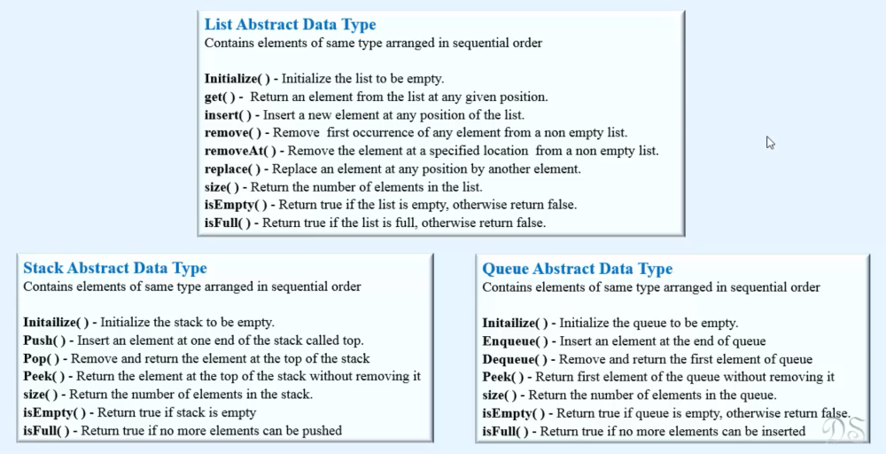

Abstract Data Types
What is Abstract Data Types ?
> It is just a Concept/idea to define data types logically . They do not have physical existence in the memory.
> It includes set of data and operations that can be performed on it.
> Abstract data Types can also be considered ad CUSTOM_DATA_STRUCTURES
> Examples: List, Stack, Queue.

> They are abstract because only Logically/Conceptually we know WHAT they do but we are unknown about HOW they are performing operation in the
physical memory whether they have been implemented using array or linked list or some other data structure. We also don't what logic does their methods are using.
Abstract Data Type VS Data Structure
1. Abstract data types is a logical representation of data whereas Data Structure is the actual representation of data which do exist in the memory like array, linked list etc.
2. Abstract data type tells WHAT TO DO and Data Structure tells HOW TO DO.